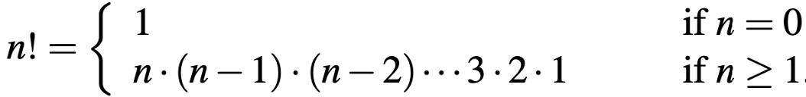

<!DOCTYPE html>
<html lang="en">
  <head>
    <meta charset="utf-8" />
    <meta name="viewport" content="width=device-width, initial-scale=1.0, maximum-scale=1.0, user-scalable=no" />

    <title></title>
    <link rel="stylesheet" href="dist/reveal.css" />
    <link rel="stylesheet" href="dist/theme/iph.css" id="theme" />
    <link rel="stylesheet" href="plugin/highlight/spyder.css" />
	<link rel="stylesheet" href="css/layout.css" />
	<link rel="stylesheet" href="plugin/customcontrols/style.css">


    <script defer src="dist/fontawesome/all.min.js"></script>

	<script type="text/javascript">
		var forgetPop = true;
		function onPopState(event) {
			if(forgetPop){
				forgetPop = false;
			} else {
				parent.postMessage(event.target.location.href, "app://obsidian.md");
			}
        }
		window.onpopstate = onPopState;
		window.onmessage = event => {
			if(event.data == "reload"){
				window.document.location.reload();
			}
			forgetPop = true;
		}

		function fitElements(){
			const itemsToFit = document.getElementsByClassName('fitText');
			for (const item in itemsToFit) {
				if (Object.hasOwnProperty.call(itemsToFit, item)) {
					var element = itemsToFit[item];
					fitElement(element,1, 1000);
					element.classList.remove('fitText');
				}
			}
		}

		function fitElement(element, start, end){

			let size = (end + start) / 2;
			element.style.fontSize = `${size}px`;

			if(Math.abs(start - end) < 1){
				while(element.scrollHeight > element.offsetHeight){
					size--;
					element.style.fontSize = `${size}px`;
				}
				return;
			}

			if(element.scrollHeight > element.offsetHeight){
				fitElement(element, start, size);
			} else {
				fitElement(element, size, end);
			}		
		}


		document.onreadystatechange = () => {
			fitElements();
			if (document.readyState === 'complete') {
				if (window.location.href.indexOf("?export") != -1){
					parent.postMessage(event.target.location.href, "app://obsidian.md");
				}
				if (window.location.href.indexOf("print-pdf") != -1){
					let stateCheck = setInterval(() => {
						clearInterval(stateCheck);
						window.print();
					}, 250);
				}
			}
	};


        </script>
  </head>
  <body>
    <div class="reveal">
      <div class="slides"><section  data-markdown><script type="text/template"><!-- .slide: class="has-light-background drop" data-background-color="#f8f8f8" -->
<div class="" style="position: absolute; left: 0px; top: 0px; height: 700px; width: 960px; min-height: 700px; display: flex; flex-direction: column; align-items: center; justify-content: center" absolute="true">

### <i class="fas fa-award"></i> IP Honores

 ####  *Laboratorio 2 de Nivel 3 - N3-L2*

[Eduardo Rosales](mailto:ee.rosales24@uniandes.edu.co)

Departamento de Ingeniería de Sistemas y Computación

Universidad de los Andes
</div></script></section><section  data-markdown><script type="text/template"><!-- .slide: class="has-light-background drop" data-background-color="#f8f8f8" -->
<div class="" style="position: absolute; left: 0px; top: 0px; height: 700px; width: 960px; min-height: 700px; display: flex; flex-direction: column; align-items: center; justify-content: center" absolute="true">

### Objetivos
 

- **Objetivos**
	- Afianzar el concepto de ciclo en Python
	- Afianzar la habilidad de crear un plan de implementación
		- Como una ayuda, antes de implementar una función
</div></script></section><section  data-markdown><script type="text/template"><!-- .slide: class="has-light-background drop" data-background-color="#f8f8f8" -->
<div class="" style="position: absolute; left: 0px; top: 0px; height: 700px; width: 960px; min-height: 700px; display: flex; flex-direction: column; align-items: center; justify-content: center" absolute="true">

### Siga paso a paso las siguientes instrucciones
</div></script></section><section  data-markdown><script type="text/template"><!-- .slide: class="has-light-background drop" data-background-color="#f8f8f8" -->
<div class="" style="position: absolute; left: 0px; top: 0px; height: 700px; width: 960px; min-height: 700px; display: flex; flex-direction: column; align-items: center; justify-content: center" absolute="true">

### Trabajo individual

- Este laboratorio debe realizarse de forma
	- **Completamente individual**<!-- .element: class="fragment highlight-red" -->

	<br>
	
	
- Por favor:
	- Evite las distracciones
	- Guarde **silencio**<!-- .element: class="fragment highlight-blue" -->

	<br>

- Si no termina el laboratorio
	- Debe finalizarlo (**y comprenderlo**)<!-- .element: class="fragment highlight-green" --> 
		- En las 5h
			- De trabajo individual semanal
</div></script></section><section  data-markdown><script type="text/template"><!-- .slide: class="has-light-background drop" data-background-color="#f8f8f8" -->
<div class="" style="position: absolute; left: 0px; top: 0px; height: 700px; width: 960px; min-height: 700px; display: flex; flex-direction: column; align-items: center; justify-content: center" absolute="true">

### Preguntas

- En caso de dudas, por favor:

<br> 

1. Formule su pregunta de forma **muy clara y concisa**

<br>

2. Luego (**y solo luego de esto**)
	- Levante la mano

<br>

<i class="fas fa-question-circle fa-1x fa-spin fa-1x"></i> _Al plantearse correctamente la pregunta, la respuesta a veces se revela sola_
</div></script></section><section  data-markdown><script type="text/template"><!-- .slide: class="has-light-background drop" data-background-color="#f8f8f8" -->
<div class="" style="position: absolute; left: 0px; top: 0px; height: 700px; width: 960px; min-height: 700px; display: flex; flex-direction: column; align-items: center; justify-content: center" absolute="true">

#  Actividad I

- **Objetivos:**
	- Afianzar la compresión de los ciclos e iteración
		- `while`
		- `for`
	- Afianzar la habilidad de crear un plan de implementación
</div></script></section><section  data-markdown><script type="text/template"><!-- .slide: class="has-light-background drop" data-background-color="#f8f8f8" -->
<div class="" style="position: absolute; left: 0px; top: 0px; height: 700px; width: 960px; min-height: 700px; display: flex; flex-direction: column; align-items: center; justify-content: center" absolute="true">

###  Actividad I (1/10)

- Cree un archivo llamado: `logica.py`
	- Copie y pegue el siguiente código e implemente el `TODO1`:

```python
import doctest

def contar_vocales_while(cadena: str) -> int:
    """
    Cuenta la cantidad de vocales (a, e, i, o, u) en un string.
    Nota: Debe usar el ciclo while

    Args:
        cadena (str): String en el que se desea contar las vocales.
        
    Returns:
        int: Número total de vocales presentes en el string.

    >>> contar_vocales_while("")  # Caso de string vacío
    0
    >>> contar_vocales_while("rhythm")  # Caso sin vocales
    0
    >>> contar_vocales_while("hola mundo")  # Caso con varias vocales
    4
    >>> contar_vocales_while("AEIOU")  # Caso con vocales en mayúscula
    5
    >>> contar_vocales_while("Python 3.10")  # Caso con mezcla de caracteres
    1
    """
    # TODO1: Implemente la función tal y como se describe en la documentación

#doctest.run_docstring_examples(contar_vocales_while, globals(), verbose=True)
```
</div></script></section><section  data-markdown><script type="text/template"><!-- .slide: class="has-light-background drop" data-background-color="#f8f8f8" -->
<div class="" style="position: absolute; left: 0px; top: 0px; height: 700px; width: 960px; min-height: 700px; display: flex; flex-direction: column; align-items: center; justify-content: center" absolute="true">

###  Actividad I (2/10)

- En `logica.py`
	- Copie y pegue el siguiente código e implemente el `TODO2`:

```python
def contar_vocales_for(cadena: str) -> int:
    """
    Cuenta la cantidad de vocales (a, e, i, o, u) en un string.
    Nota: Debe usar el ciclo for.

    Args:
        cadena (str): String en el que se desea contar las vocales.
        
    Returns:
        int: Número total de vocales presentes en el string.

    >>> contar_vocales_for("")  # Caso de string vacío
    0
    >>> contar_vocales_for("rhythm")  # Caso sin vocales
    0
    >>> contar_vocales_for("hola mundo")  # Caso con varias vocales
    4
    >>> contar_vocales_for("AEIOU")  # Caso con vocales en mayúscula
    5
    >>> contar_vocales_for("Python 3.10")  # Caso con mezcla de caracteres
    1
    """
    # TODO2: Implemente la función tal y como se describe en la documentación

#doctest.run_docstring_examples(contar_vocales_for, globals(), verbose=True)
```
</div></script></section><section  data-markdown><script type="text/template"><!-- .slide: class="has-light-background drop" data-background-color="#f8f8f8" -->
<div class="" style="position: absolute; left: 0px; top: 0px; height: 700px; width: 960px; min-height: 700px; display: flex; flex-direction: column; align-items: center; justify-content: center" absolute="true">

###  Actividad I (3/10)

- En `logica.py`
	- Copie y pegue el siguiente código
	- Cree un _plan de implementación_
		- No implemente la función hasta no tener un plan muy concreto
	- Implemente el `TODO3`:
<br>

- **NOTA:**  NO es necesario entregar ningún plan de implementación en este laboratorio
	

<br>

```python
def validar_password_while(password: str) -> bool:
    """
    Valida si un password dado cumple con los siguientes requisitos:
    - Tiene mínimo 8 caracteres
    - Contiene al menos una letra mayúscula
    - Contiene al menos una letra minúscula
    - Contiene al menos un número
    
    Nota 1: En esta función No se pide el password.  Este llega en el parámetro
    password.
    Nota 2: Debe usar while solo para recorrer el string del password y hacer
    las validaciones.

    Args:
        password (str): Contraseña a validar.

    Returns:
        bool: True si la contraseña es válida, False en caso contrario.

    >>> validar_password_while("")  # Caso de string vacío
    False
    >>> validar_password_while("12345678")  # Solo números
    False
    >>> validar_password_while("abcdefgh")  # Solo minúsculas
    False
    >>> validar_password_while("ABCDEFGH")  # Solo mayúsculas
    False
    >>> validar_password_while("Abcdefgh")  # Letras pero sin números
    False
    >>> validar_password_while("Abcdefg1")  # Cumple con todo
    True
    """
    # TODO3: Implemente la función tal y como se describe en la documentación

#doctest.run_docstring_examples(validar_password_while, globals(), verbose=True)
```
</div></script></section><section  data-markdown><script type="text/template"><!-- .slide: class="has-light-background drop" data-background-color="#f8f8f8" -->
<div class="" style="position: absolute; left: 0px; top: 0px; height: 700px; width: 960px; min-height: 700px; display: flex; flex-direction: column; align-items: center; justify-content: center" absolute="true">

###  Actividad I (4/10)

- En `logica.py`
	- Copie y pegue el siguiente código
	- Cree un _plan de implementación_
		- No implemente la función hasta no tener un plan muy concreto
	- Implemente el `TODO4`:

```python
def validar_password_for(password: str) -> bool:
    """
    Valida si un password dado cumple con los siguientes requisitos:
    - Tiene mínimo 8 caracteres
    - Contiene al menos una letra mayúscula
    - Contiene al menos una letra minúscula
    - Contiene al menos un número
    
    Nota 1: En esta función No se pide el password.  Este llega en el parámetro
    password.
    Nota 2: Debe usar for solo para recorrer el string del password y hacer
    las validaciones.

    Args:
        password (str): Contraseña a validar.

    Returns:
        bool: True si la contraseña es válida, False en caso contrario.

    >>> validar_password_for("")  # Caso de string vacío
    False
    >>> validar_password_for("12345678")  # Solo números
    False
    >>> validar_password_for("abcdefgh")  # Solo minúsculas
    False
    >>> validar_password_for("ABCDEFGH")  # Solo mayúsculas
    False
    >>> validar_password_for("Abcdefgh")  # Letras pero sin números
    False
    >>> validar_password_for("Abcdefg1")  # Cumple con todo
    True
    """
    # TODO4: Implemente la función tal y como se describe en la documentación

#doctest.run_docstring_examples(validar_password_for, globals(), verbose=True)
```
</div></script></section><section  data-markdown><script type="text/template"><!-- .slide: class="has-light-background drop" data-background-color="#f8f8f8" -->
<div class="" style="position: absolute; left: 0px; top: 0px; height: 700px; width: 960px; min-height: 700px; display: flex; flex-direction: column; align-items: center; justify-content: center" absolute="true">

### Comprendamos el concepto de Factorial
</div></script></section><section  data-markdown><script type="text/template"><!-- .slide: class="has-light-background drop" data-background-color="#f8f8f8" -->
<div class="" style="position: absolute; left: 0px; top: 0px; height: 700px; width: 960px; min-height: 700px; display: flex; flex-direction: column; align-items: center; justify-content: center" absolute="true">

### Factorial (1/2)

- Denotado como `n!`, donde `n` es un número
	- Producto de todos los enteros positivos `≤ n`
- Ej:

```plaintext
No hay enteros positivos menores que 1, así que el factorial de cero es 1:
factorial(0) = 1 

factorial(1) = 1

factorial(2) = 2 × factorial(1) = 2

factorial(3) = 3 × factorial(2) = 6

factorial(4) = 4 × factorial(3) = 24

factorial(5) = 5 × factorial(4) = 120

...
```
</div></script></section><section  data-markdown><script type="text/template"><!-- .slide: class="has-light-background drop" data-background-color="#f8f8f8" -->
<div class="" style="position: absolute; left: 0px; top: 0px; height: 700px; width: 960px; min-height: 700px; display: flex; flex-direction: column; align-items: center; justify-content: center" absolute="true">

### Factorial (2/2)

```plaintext
factorial(0) = 1 
factorial(1) = 1
factorial(2) = 2 × factorial(1) = 2
factorial(3) = 3 × factorial(2) = 6
factorial(4) = 4 × factorial(3) = 24
factorial(5) = 5 × factorial(4) = 120
```




- &shy;<!-- .element: class="fragment" data-fragment-index="1" -->✅  Entender la definición matemática del factorial
</div></script></section><section  data-markdown><script type="text/template"><!-- .slide: class="has-light-background drop" data-background-color="#f8f8f8" -->
<div class="" style="position: absolute; left: 0px; top: 0px; height: 700px; width: 960px; min-height: 700px; display: flex; flex-direction: column; align-items: center; justify-content: center" absolute="true">

###  Actividad I (5/10)

- En `logica.py`
	- Copie y pegue el siguiente código
	- Cree un _plan de implementación_
		- No implemente la función hasta no tener un plan muy concreto
	- Implemente el `TODO5`:

```python
def factorial_while(n: int) -> int:
    """
    Calcula el factorial de un número (n!).
    Nota: Debe usar while y validar con assert que n sea 0 o un entero positivo.

    Args:
        n (int): El número positivo para calcular su factorial.

    Returns:
        int: El factorial del número proporcionado.

    >>> factorial_while(0)  # Caso 0
    1
    >>> factorial_while(1)  # Caso 1
    1
    >>> factorial_while(2)  # Caso 2
    2
    >>> factorial_while(3)  # Caso 3
    6
    >>> factorial_while(4)  # Caso 4
    24
    >>> factorial_while(5)  # Caso 5
    120
    """
    # TODO5: Implemente la función tal y como se describe en la documentación

#doctest.run_docstring_examples(factorial_while, globals(), verbose=True)
```
</div></script></section><section  data-markdown><script type="text/template"><!-- .slide: class="has-light-background drop" data-background-color="#f8f8f8" -->
<div class="" style="position: absolute; left: 0px; top: 0px; height: 700px; width: 960px; min-height: 700px; display: flex; flex-direction: column; align-items: center; justify-content: center" absolute="true">

###  Actividad I (6/10)

- En `logica.py`
	- Copie y pegue el siguiente código
	- Cree un _plan de implementación_
		- No implemente la función hasta no tener un plan muy concreto
	- Implemente el `TODO6`:

```python
def factorial_for(n: int) -> int:
    """
    Calcula el factorial de un número (n!).
    Nota: Debe usar for y validar con assert que n sea 0 o un entero positivo.

    Args:
        n (int): El número positivo para calcular su factorial.

    Returns:
        int: El factorial del número proporcionado.

    >>> factorial_for(0)  # Caso 0
    1
    >>> factorial_for(1)  # Caso 1
    1
    >>> factorial_for(2)  # Caso 2
    2
    >>> factorial_for(3)  # Caso 3
    6
    >>> factorial_for(4)  # Caso 4
    24
    >>> factorial_for(5)  # Caso 5
    120
    """
    # TODO6: Implemente la función tal y como se describe en la documentación

#doctest.run_docstring_examples(factorial_for, globals(), verbose=True)
```
</div></script></section><section  data-markdown><script type="text/template"><!-- .slide: class="has-light-background drop" data-background-color="#f8f8f8" -->
<div class="" style="position: absolute; left: 0px; top: 0px; height: 700px; width: 960px; min-height: 700px; display: flex; flex-direction: column; align-items: center; justify-content: center" absolute="true">

### Comprendamos la Serie  Fibonacci
</div></script></section><section  data-markdown><script type="text/template"><!-- .slide: class="has-light-background drop" data-background-color="#f8f8f8" -->
<div class="" style="position: absolute; left: 0px; top: 0px; height: 700px; width: 960px; min-height: 700px; display: flex; flex-direction: column; align-items: center; justify-content: center" absolute="true">

###  Serie Fibonacci

- Serie en donde cada número es la suma de los dos anteriores
	- Ej:
```plaintext
fibonacci(0) = 0
fibonacci(1) = 1
fibonacci(2) = fibonacci(1) + fibonacci(0) = 1 + 0 = 1
fibonacci(3) = fibonacci(2) + fibonacci(1) = 1 + 1 = 2
fibonacci(4) = fibonacci(3) + fibonacci(2) = 2 + 1 = 3
fibonacci(5) = fibonacci(4) + fibonacci(3) = 3 + 2 = 5
…
fibonacci(n) = fibonacci(n−1) + fibonacci(n−2)
```

- &shy;<!-- .element: class="fragment" data-fragment-index="1" -->✅  Entender la definición matemática de la Serie Fibonacci
</div></script></section><section  data-markdown><script type="text/template"><!-- .slide: class="has-light-background drop" data-background-color="#f8f8f8" -->
<div class="" style="position: absolute; left: 0px; top: 0px; height: 700px; width: 960px; min-height: 700px; display: flex; flex-direction: column; align-items: center; justify-content: center" absolute="true">

###  Actividad I (7/10)

- En `logica.py`
	- Copie y pegue el siguiente código
	- Cree un _plan de implementación_
		- No implemente la función hasta no tener un plan muy concreto
	- Implemente el `TODO7`:

```python
def fibonacci_while(n: int) -> int:
    """
    Calcula el n-ésimo número de la secuencia de Fibonacci.
    Nota: Debe usar while y validar con assert que n sea 0 o un entero positivo.

    Args:
        n (int): La posición en la secuencia de Fibonacci (entero no negativo).

    Returns:
        int: El n-ésimo número de Fibonacci.

    >>> fibonacci_while(0)  # Caso 0
    0
    >>> fibonacci_while(1)  # Caso 1
    1
    >>> fibonacci_while(2)  # Caso 2
    1
    >>> fibonacci_while(12)  # Caso 12
    144
    >>> fibonacci_while(24)  # Caso 24
    46368
    """
    # TODO7: Implemente la función tal y como se describe en la documentación

#doctest.run_docstring_examples(fibonacci_while, globals(), verbose=True)
```
</div></script></section><section  data-markdown><script type="text/template"><!-- .slide: class="has-light-background drop" data-background-color="#f8f8f8" -->
<div class="" style="position: absolute; left: 0px; top: 0px; height: 700px; width: 960px; min-height: 700px; display: flex; flex-direction: column; align-items: center; justify-content: center" absolute="true">

###  Actividad I (8/10)

- En `logica.py`
	- Copie y pegue el siguiente código
	- Cree un _plan de implementación_
		- No implemente la función hasta no tener un plan muy concreto
	- Implemente el `TODO8`:

```python
def fibonacci_for(n: int) -> int:
    """
    Calcula el n-ésimo número de la secuencia de Fibonacci.
    Nota: Debe usar for y validar con assert que n sea 0 o un entero positivo.

    Args:
        n (int): La posición en la secuencia de Fibonacci (entero no negativo).

    Returns:
        int: El n-ésimo número de Fibonacci.

    >>> fibonacci_for(0)  # Caso 0
    0
    >>> fibonacci_for(1)  # Caso 1
    1
    >>> fibonacci_for(2)  # Caso 2
    1
    >>> fibonacci_for(12)  # Caso 12
    144
    >>> fibonacci_for(24)  # Caso 24
    46368
    """
    # TODO8: Implemente la función tal y como se describe en la documentación

#doctest.run_docstring_examples(fibonacci_for, globals(), verbose=True)
```
</div></script></section><section  data-markdown><script type="text/template"><!-- .slide: class="has-light-background drop" data-background-color="#f8f8f8" -->
<div class="" style="position: absolute; left: 0px; top: 0px; height: 700px; width: 960px; min-height: 700px; display: flex; flex-direction: column; align-items: center; justify-content: center" absolute="true">

###  Actividad I (9/10)

- En `logica.py`
	- Copie y pegue el siguiente código
		- Vea los tips en las 3 siguientes diapositivas.


```python
def cifrado_espejo(texto: str) -> str:
    """
    Convierte un texto en su 'espejo' dentro del rango ASCII imprimible (32–126).
    Nota: Debe usar for y la función ord() para
    obtener el código ASCII de cada carácter.
    
    Enlaces de ayuda:
    
    https://eerosales24.github.io/iph_2025_20/n2/n2_05_mas_operaciones_sobre_strings/#/8
    
    https://docs.python.org/es/3/library/functions.html#ord

    Args:
        texto (str): Texto a codificar o decodificar.

    Returns:
        str: Texto transformado en su versión "espejo".

    >>> codificado = cifrado_espejo("Hola Mundo!")  # Codificación
    >>> decodificado = cifrado_espejo(cifrado_espejo(codificado))  # Decodificación
    >>> codificado == decodificado
    True
    
    >>> codificado = cifrado_espejo("Python is fun!")  # Codificación
    >>> decodificado = cifrado_espejo(cifrado_espejo(codificado))  # Decodificación
    >>> codificado == decodificado
    True
    
    >>> codificado = cifrado_espejo("Ingenería de Sistemas = Amar la programación")  # Codificación
    >>> decodificado = cifrado_espejo(cifrado_espejo(codificado))  # Decodificación
    >>> codificado == decodificado
    True
    """
    # TODO9: Implemente la función tal y como se describe en la documentación

#doctest.run_docstring_examples(cifrado_espejo, globals(), verbose=True)
```
</div></script></section><section  data-markdown><script type="text/template"><!-- .slide: class="has-light-background drop" data-background-color="#f8f8f8" -->
<div class="" style="position: absolute; left: 0px; top: 0px; height: 700px; width: 960px; min-height: 700px; display: flex; flex-direction: column; align-items: center; justify-content: center" absolute="true">

###  Cifrado espejo - Tips (1/3)

Si el código ASCII está entre **32 y 126** (caracteres imprimibles estándar):

- Calcule su **“espejo”** con la fórmula `158 - codigo`, de modo que:
    
    - `32 ↔ 126`
        
    - `33 ↔ 125`
        
    - `34 ↔ 124`
        
    - … y así sucesivamente
</div></script></section><section  data-markdown><script type="text/template"><!-- .slide: class="has-light-background drop" data-background-color="#f8f8f8" -->
<div class="" style="position: absolute; left: 0px; top: 0px; height: 700px; width: 960px; min-height: 700px; display: flex; flex-direction: column; align-items: center; justify-content: center" absolute="true">

###  Cifrado espejo - Tips (2/3)

- El algoritmo debe usar la fórmula:
  ```python
  espejo = 158 - codigo
  ```
    
- Supongamos que se tiene un carácter con código ASCII: `x`
    
    - En la **primera pasada** se convierte en:
  ```python
  y = 158 - x
  ```
  - Ahora, en la **segunda pasada**, se transforma a:
  ```python
  z = 158 - y
  ```
       
  - Al sustituir `y = 158 - x`:
  ```python
  z = 158 - y
  z = 158 - (158 - x) 
  z = 158 - 158 + x 
  z = x
  ```

- A esto se le llama, _cifrado simétrico_
</div></script></section><section  data-markdown><script type="text/template"><!-- .slide: class="has-light-background drop" data-background-color="#f8f8f8" -->
<div class="" style="position: absolute; left: 0px; top: 0px; height: 700px; width: 960px; min-height: 700px; display: flex; flex-direction: column; align-items: center; justify-content: center" absolute="true">

###  Cifrado espejo - Tips (3/3)

- Con base en:
	- La documentación de la función
	- Los doctests
	- Los tips previos
- Escriba el _plan de implementación de la función_
	- No escriba código
		- Hasta no tener un plan de implementación **muy concreto**
- Implemente el `TODO9`
- Agregue dos doctests con el cifrado y descifrado de:
	- Su nombre
	- Su frase favorita
</div></script></section><section  data-markdown><script type="text/template"><!-- .slide: class="has-light-background drop" data-background-color="#f8f8f8" -->
<div class="" style="position: absolute; left: 0px; top: 0px; height: 700px; width: 960px; min-height: 700px; display: flex; flex-direction: column; align-items: center; justify-content: center" absolute="true">

###  Actividad I (10/10)

1. Revise si sus funciones cumplen con [todas las buenas prácticas obligatorias del curso](https://eerosales24.github.io/iph_2025_20/general/buenas_practicas/)
	- Desde **BP-1 a BP-26**
	<br>

2. Si una función no cumple las anteriores buenas prácticas
	- Por favor corrija su implementación
</div></script></section><section  data-markdown><script type="text/template"><!-- .slide: class="has-light-background drop" data-background-color="#f8f8f8" -->
<div class="" style="position: absolute; left: 0px; top: 0px; height: 700px; width: 960px; min-height: 700px; display: flex; flex-direction: column; align-items: center; justify-content: center" absolute="true">

### Entrega (1/2)

1. Comprima en un archivo `.zip` el archivo:
	- `logica.py`
</div></script></section><section  data-markdown><script type="text/template"><!-- .slide: class="has-light-background drop" data-background-color="#f8f8f8" -->
<div class="" style="position: absolute; left: 0px; top: 0px; height: 700px; width: 960px; min-height: 700px; display: flex; flex-direction: column; align-items: center; justify-content: center" absolute="true">

### Entrega (2/2)

2. Haga el envío del `.zip` en  [Bloque Neón](https://bloqueneon.uniandes.edu.co/)
	- Vaya a **"Actividades"**
		- **"N3-L2"**
</div></script></section><section  data-markdown><script type="text/template"><!-- .slide: class="has-light-background drop" data-background-color="#f8f8f8" -->
<div class="" style="position: absolute; left: 0px; top: 0px; height: 700px; width: 960px; min-height: 700px; display: flex; flex-direction: column; align-items: center; justify-content: center" absolute="true">

# Fin de N3-L2

- Si no alcanzó a terminar el laboratorio
	- Debe completar el laboratorio en su tiempo de 
		- **Trabajo individual semanal** de IP Honores


<br>

 [<i class="fas fa-home  fa-3x"></i>](https://eerosales24.github.io/iph_2025_10/#)
</div></script></section></div>
    </div>

    <script src="dist/reveal.js"></script>

    <script src="plugin/markdown/markdown.js"></script>
    <script src="plugin/highlight/highlight.js"></script>
    <script src="plugin/zoom/zoom.js"></script>
    <script src="plugin/notes/notes.js"></script>
    <script src="plugin/math/math.js"></script>
	<script src="plugin/mermaid/mermaid.js"></script>
	<script src="plugin/chart/chart.min.js"></script>
	<script src="plugin/chart/plugin.js"></script>
	<script src="plugin/customcontrols/plugin.js"></script>

    <script>
      function extend() {
        var target = {};
        for (var i = 0; i < arguments.length; i++) {
          var source = arguments[i];
          for (var key in source) {
            if (source.hasOwnProperty(key)) {
              target[key] = source[key];
            }
          }
        }
        return target;
      }

	  function isLight(color) {
		let hex = color.replace('#', '');

		// convert #fff => #ffffff
		if(hex.length == 3){
			hex = `${hex[0]}${hex[0]}${hex[1]}${hex[1]}${hex[2]}${hex[2]}`;
		}

		const c_r = parseInt(hex.substr(0, 2), 16);
		const c_g = parseInt(hex.substr(2, 2), 16);
		const c_b = parseInt(hex.substr(4, 2), 16);
		const brightness = ((c_r * 299) + (c_g * 587) + (c_b * 114)) / 1000;
		return brightness > 155;
	}

	var bgColor = getComputedStyle(document.documentElement).getPropertyValue('--r-background-color').trim();
	var isLight = isLight(bgColor);

	if(isLight){
		document.body.classList.add('has-light-background');
	} else {
		document.body.classList.add('has-dark-background');
	}

      // default options to init reveal.js
      var defaultOptions = {
        controls: true,
        progress: true,
        history: true,
        center: true,
        transition: 'default', // none/fade/slide/convex/concave/zoom
        plugins: [
          RevealMarkdown,
          RevealHighlight,
          RevealZoom,
          RevealNotes,
          RevealMath.MathJax3,
		  RevealMermaid,
		  RevealChart,
		  RevealCustomControls,
        ],


    	allottedTime: 120 * 1000,

		mathjax3: {
			mathjax: 'plugin/math/mathjax/tex-mml-chtml.js',
		},
		markdown: {
		  gfm: true,
		  mangle: true,
		  pedantic: false,
		  smartLists: false,
		  smartypants: false,
		},

		mermaid: {
			theme: isLight ? 'default' : 'dark',
		},

		customcontrols: {
			controls: [
			]
		},
      };

      // options from URL query string
      var queryOptions = Reveal().getQueryHash() || {};

      var options = extend(defaultOptions, {"width":960,"height":700,"margin":"0.025","minScale":"0.1","maxScale":"2.0","controls":"true","controlsLayout":"bottom-right","progress":"true","slideNumber":"true","center":"false","transition":"slide","transitionSpeed":"default"}, queryOptions);
    </script>

    <script>
      Reveal.initialize(options);
    </script>
  </body>

  <!-- created with Advanced Slides -->
</html>
